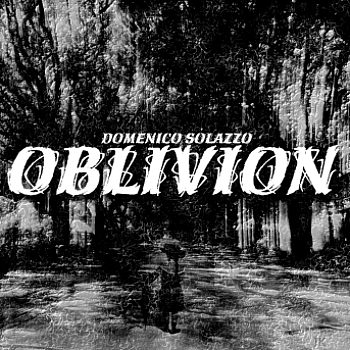

| Artist: | Domenico Solazzo |
| Title: | Oblivion |
| Label: | LAP 0508 |
| Length(s): | 50 minutes |
| Year(s) of release: | 2005 |
| Month of review: | [09/2005] |
| 1) | Fake Grey Matter | 4.19 |
| 2) | The Lie | 2.27 |
| 3) | Led Lung | 4.54 |
| 4) | Drop Me | 4.02 |
| 5) | Columns Of Fire | 5.25 |
| 6) | Psoriasis | 5.42 |
| 7) | Res Ipsa Loquitur | 6.33 |
| 8) | My Hell Your Aim | 5.17 |
| 9) | Of Human Waste | 12.15 |
The Lie opens with laid back, high pitched guitar, again in meandering style. The music has a very noise like character in the beginning. Later when the drums come in more fully, we arrive at avant-rock. There is some tension here, mainly due to a repetitive pattern of...yeah what. Led Lung opens with percussion, and then burst loose into highly distorted guitar with the alto sax sounding as if all the cars in Belgium brake at once (and half of them crash into a wall notwithstanding). The guitar is slightly Crimsonesque, but more manic and less structured. A bit over the top for me. I need more melody and structure generally, even when it seems they are in hiding.
Does Drop Me bring anything new? Well, not really, although the music is a bit less noisy, the sounds that are used are more accidental, and by themselves clearer, more well-defined. That does make it more listenable. A relation between the sax and the guitar I did not yet find. In that sense, one is often tempted to think of jazz.
Columns Of Fire is largely a combination of drums, rather heavy, and a wailing sax. The guitar adds plenty of noise in places, making the outcome sound harried and hectic in the middle. Later the music winds down again somewhat, being more 'occasional' than full-blast. The drums do sound jazzy here.
Psoriasis has a slightly Arabic feel at times, because of the hasty sax playing somewhere in the back. For the remainder it is mainly percussion. Res Ipsa Loquitur is one of the more succesful attempts on this album, especially the first and latter part. There is some nice atmospheric play and feel here, and only some noise in the middle.
We continue this cd of avant-improv rock with My Hell Your Aim, which is again one of the more succesful ones on the album (they tend to come towards the end of the album). Final and by far longest track on this album is Of Human Waste. This is a totally different affair in which the electric guitar builds an introspective mood, a bit ECMish and meandering, even modern classical like. Later on, some Frippian guitar comes in.